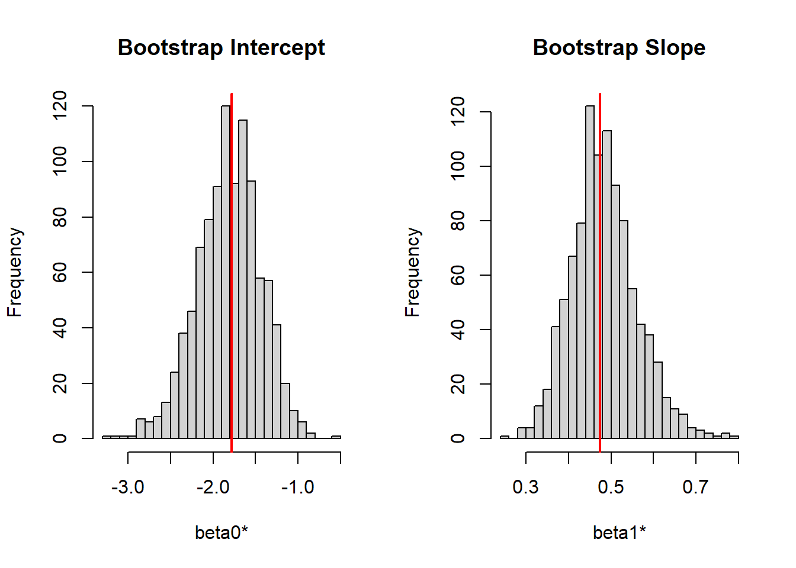

set.seed(123)
x <- rnorm(50, mean = 10, sd = 2)
n <- length(x)
mu_hat <- mean(x)
sd_hat <- sd(x)Bootstrapping Examples in R
What is Bootstrapping?
Bootstrapping is a procedure for estimating the distribution of an estimator by resampling (often with replacement) from the data or from a fitted model.
It assigns measures of accuracy (bias, variance, confidence intervals, prediction error) to sample estimates and allows estimation of the sampling distribution of almost any statistic using simulation.
I use rnorm function (randomize + normal distribution) to generate a practice set of data.
Fit model
Run bootstrap
B <- 1000
mu_boot <- numeric(B)
for (b in 1:B) {
x_star <- rnorm(n, mean = mu_hat, sd = sd_hat)
mu_boot[b] <- mean(x_star)
}results
boot_mean <- mean(mu_boot)
boot_se <- sd(mu_boot)
ci <- quantile(mu_boot, c(0.025, 0.975))
boot_mean[1] 10.06563boot_se[1] 0.2470952ci 2.5% 97.5%
9.585642 10.531793 Example for linear regression
set.seed(123)
n <- 100
x <- runif(n, 0, 10)
y <- 5 + 2 * x + rnorm(n, 0, 2)Fit linear model
fit <- lm(y ~ x)
summary(fit)
Call:
lm(formula = y ~ x)
Residuals:
Min 1Q Median 3Q Max
-4.4759 -1.2265 -0.0395 1.1927 4.4345
Coefficients:
Estimate Std. Error t value Pr(>|t|)
(Intercept) 4.98208 0.39211 12.71 <2e-16 ***
x 1.98203 0.06836 28.99 <2e-16 ***
---
Signif. codes: 0 '***' 0.001 '**' 0.01 '*' 0.05 '.' 0.1 ' ' 1
Residual standard error: 1.939 on 98 degrees of freedom
Multiple R-squared: 0.8956, Adjusted R-squared: 0.8945
F-statistic: 840.6 on 1 and 98 DF, p-value: < 2.2e-16Extract parameters
beta_hat <- coef(fit)
sigma_hat <- summary(fit)$sigmaBootstrap
B <- 1000
beta_boot <- matrix(NA, nrow = B, ncol = length(beta_hat))
for (b in 1:B) {
y_star <- beta_hat[1] + beta_hat[2] * x + rnorm(n, 0, sigma_hat)
fit_star <- lm(y_star ~ x)
beta_boot[b, ] <- coef(fit_star)
}Results
boot_means <- colMeans(beta_boot)
boot_ses <- apply(beta_boot, 2, sd)
boot_ci <- apply(beta_boot, 2, quantile, probs = c(0.025, 0.975))
boot_means[1] 4.956659 1.987527boot_ses[1] 0.39379308 0.06913355boot_ci [,1] [,2]
2.5% 4.226149 1.858384
97.5% 5.727671 2.115856Example for logistic regression
Generate data using runif (randomize uniform distribution)
set.seed(123)
n <- 200
x <- runif(n, 0, 10)
beta0 <- -2
beta1 <- 0.5
p <- 1 / (1 + exp(-(beta0 + beta1 * x)))
y <- rbinom(n, 1, p)
data <- data.frame(y = y, x = x)
fit <- glm(y ~ x,
family = binomial(link = "logit"),
data = data)
summary(fit)
Call:
glm(formula = y ~ x, family = binomial(link = "logit"), data = data)
Coefficients:
Estimate Std. Error z value Pr(>|z|)
(Intercept) -1.77952 0.36534 -4.871 1.11e-06 ***
x 0.47483 0.07425 6.395 1.61e-10 ***
---
Signif. codes: 0 '***' 0.001 '**' 0.01 '*' 0.05 '.' 0.1 ' ' 1
(Dispersion parameter for binomial family taken to be 1)
Null deviance: 267.50 on 199 degrees of freedom
Residual deviance: 210.62 on 198 degrees of freedom
AIC: 214.62
Number of Fisher Scoring iterations: 4Extract estimated parameters
beta_hat <- coef(fit)
B <- 1000
beta_boot <- matrix(NA, nrow = B, ncol = length(beta_hat))
for (b in 1:B) {
p_hat <- 1 / (1 + exp(-(beta_hat[1] + beta_hat[2] * x)))
y_star <- rbinom(n, 1, p_hat)
fit_star <- glm(y_star ~ x,
family = binomial(link = "logit"))
beta_boot[b, ] <- coef(fit_star)
}
colnames(beta_boot) <- names(beta_hat)Results
boot_means <- colMeans(beta_boot)
boot_ses <- apply(beta_boot, 2, sd)
boot_ci <- apply(beta_boot, 2, quantile, probs = c(0.025, 0.975))
results <- data.frame(
Estimate = beta_hat,
BootMean = boot_means,
BootSE = boot_ses,
CI_lower = boot_ci[1, ],
CI_upper = boot_ci[2, ]
)
print(results) Estimate BootMean BootSE CI_lower CI_upper
(Intercept) -1.779518 -1.8127758 0.37463075 -2.5968318 -1.133648
x 0.474827 0.4839984 0.07756396 0.3501373 0.649960lets graph both intercept and slope using histogram
par(mfrow = c(1, 2))
hist(beta_boot[,1],
main = "Bootstrap Intercept",
xlab = "beta0*",
breaks = 30)
abline(v = beta_hat[1], col = "red", lwd = 2)
hist(beta_boot[,2],
main = "Bootstrap Slope",
xlab = "beta1*",
breaks = 30)
abline(v = beta_hat[2], col = "red", lwd = 2)